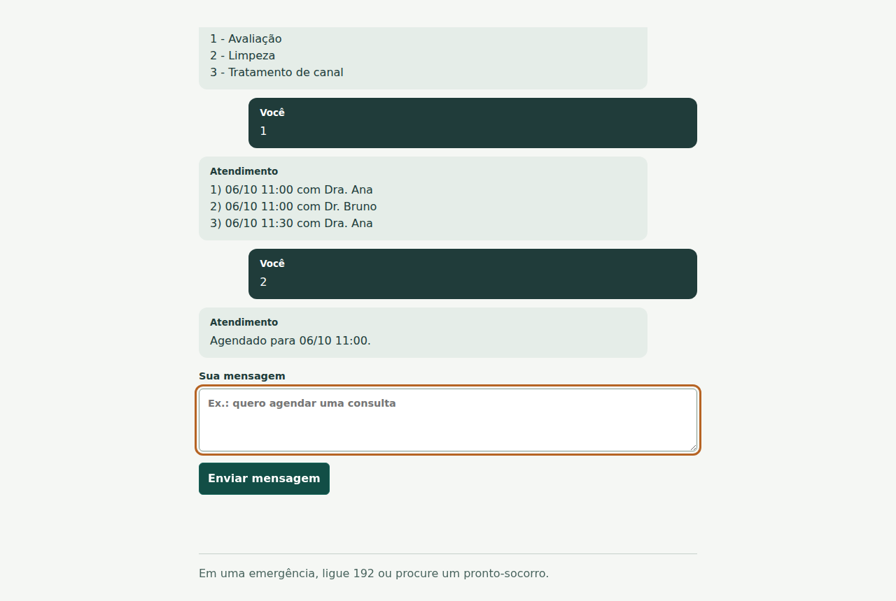
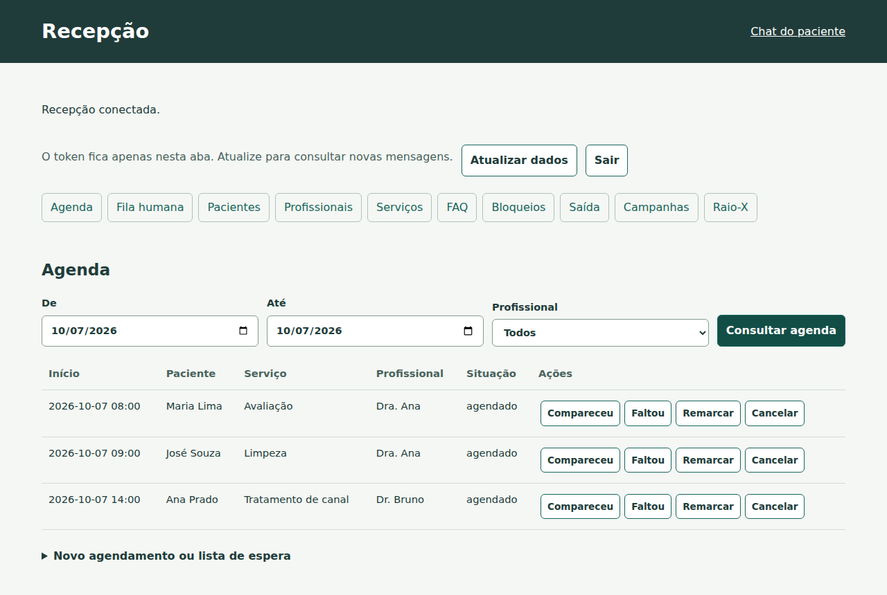

Online scheduling, automatic confirmation, waitlist and scheduled recall. Patients chat on WhatsApp (Evolution) or on the website chat, and the team steps in on Telegram when needed. Everything runs in one Docker container, with Brazil's LGPD privacy rules and the Brazilian professional councils' rules already built in.
Unannounced no-shows are a clinic's number one leak: 5 to 12% on a well-run schedule, close to 25% on average. Atende Clínica tackles this with the pieces of the "Full schedule" recipe from the Raio-X de Margem and sends the month's numbers back to the recovery dashboard.
Hours per professional, days off and vacations, confirmation 48 h ahead with "1 confirms / 2 cancels". Whoever cancels frees the slot for the waitlist right away, and recall (e.g. a cleaning every 180 days) is reminded automatically.
Patients book, reschedule and get answers from the clinic's FAQ. The bot never makes up prices or diagnoses. A request for a person, an emergency (it tells the patient to call 192, Brazil's emergency number) or two unanswered questions go to the team.
Campaigns go only to people who opted in, and the text passes the professional-council guard (the Brazilian medical, dental and physiotherapy councils: CFM, CFO, COFFITO): price, installments, raffles, "before and after", "guaranteed result". Patients can reply "PARAR" (stop), export their own data or request deletion (Brazil's LGPD privacy law).
A dependency-free Python server, with a SQLite database on a Docker volume. Evolution and Telegram are plugged in through environment variables; without them, the system runs with a simulated outbox.
WhatsApp or website chat. Books among the first 3 free slots, answers the confirmation, joins the waitlist, gets the recall reminder.
Telegram group: receives each conversation as #id, replies on top of the message or with /responder (reply), and uses /fila (queue), /agenda (schedule) and /encerrar (close).
A /recepcao page with a token: schedule by period, records for patients, professionals, services and FAQ, blocks, human queue, campaigns and indicators.
To try it on your computer, Python is enough. For production, a VPS with Docker and, if you want the channels, your own Evolution API and a Telegram bot.
Standard library only: no pip install.
# check python3 --version
Image python:3.12-slim, port bound to 127.0.0.1 only, behind an HTTPS proxy (Nginx, Caddy).
# check docker compose version
An Evolution instance connected to the clinic's WhatsApp and a bot (BotFather) in a team group. Credentials live only in .env.
# variables template cp .env.exemplo .env
The commands below are the repository's own. Start locally, without integrations; connect Evolution and Telegram last.
Copy the example and edit dados/clinica.json: name, council (cfm, cfo, coffito or estetica; the Brazilian medical, dental, physiotherapy councils, or aesthetics), your own token, hours, holidays, professionals, services (with retorno_dias) and FAQ.
git clone https://github.com/inematds/atende-clinica && cd atende-clinica mkdir -p dados && cp exemplos/clinica.json dados/clinica.json
Open http://127.0.0.1:8080/ for the patient chat and /recepcao for the team (it asks for the token from clinica.json).
./atende serve --porta 8080 --dados dados # 1st line: PORTA=8080
Confirmations, recalls and retries go out when /api/tarefas/rodar is called. Put a call in cron every 5 minutes (the operation is idempotent).
# crontab -e */5 * * * * curl -s -X POST -H "X-Token: YOUR_TOKEN" http://127.0.0.1:8080/api/tarefas/rodar
The ./dados volume holds the database; the service restarts by itself and publishes only 127.0.0.1:8080. Point the HTTPS proxy at that port, including /api/ and /webhook/.
cp .env.exemplo .env && chmod 600 .env docker compose up -d --build docker compose ps # healthy = /api/saude responding
Fill in EVOLUTION_URL, EVOLUTION_API_KEY, EVOLUTION_INSTANCIA and WEBHOOK_SEGREDO. In the instance, point the webhook to your public URL and enable the MESSAGES_UPSERT event. Groups, the clinic's own messages and retries are ignored.
# Evolution instance webhook https://YOUR-DOMAIN/webhook/evolution/<WEBHOOK_SEGREDO> docker compose up -d --force-recreate
Create the bot, add it to the team group and fill in TELEGRAM_API_URL, TELEGRAM_TOKEN, TELEGRAM_CHAT_ID and TELEGRAM_SEGREDO. Register the webhook with the same secret.
curl -X POST "https://api.telegram.org/bot<TOKEN>/setWebhook" \ -H "Content-Type: application/json" \ -d '{"url":"https://YOUR-DOMAIN/webhook/telegram","secret_token":"<TELEGRAM_SEGREDO>"}' # in the group: /fila · /agenda 2026-10-07 · /responder 3 I'll call you · /encerrar 3
The backup is a consistent snapshot (it can run while the server is up) and contains personal data: keep it under restricted access. raiox writes the month into the tracking file of the Recovery Dashboard.
./atende backup --dados dados --saida backups/clinica.zip ./atende restaurar --dados dados --entrada backups/clinica.zip # with the service stopped ./atende raiox --dados dados --mes 2026-10 --acompanhamento acompanhamento.json
Captured from Atende Clínica itself running with the sample clinic (dentistry, Dr. Ana and Dr. Bruno). The interface in these screenshots is in Portuguese.


v1 was built in a long agent run (the execucao-longa method) against 93 frozen acceptance tests, then checked on a clinic the agent had never seen and in a real docker build.